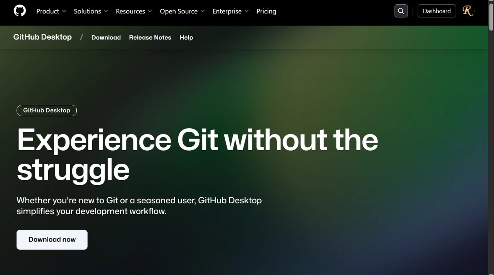
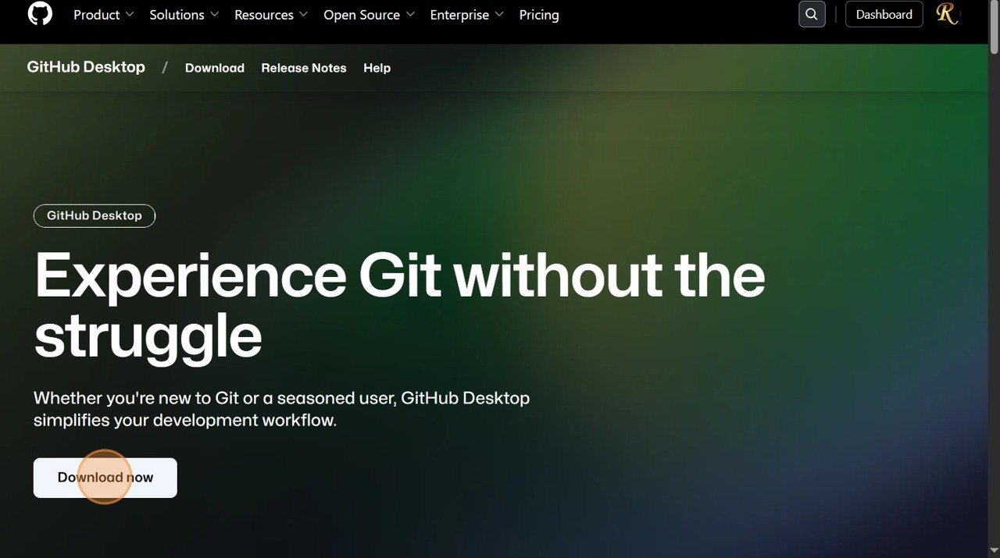
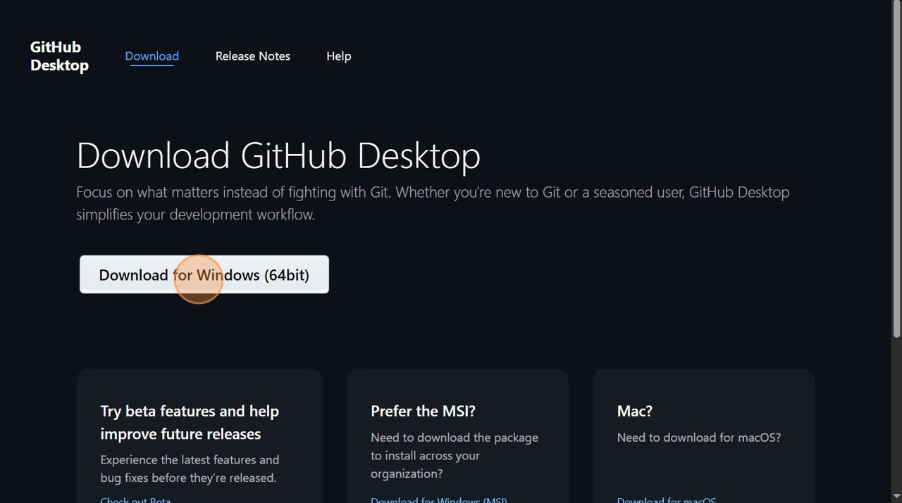
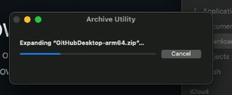
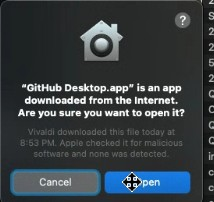
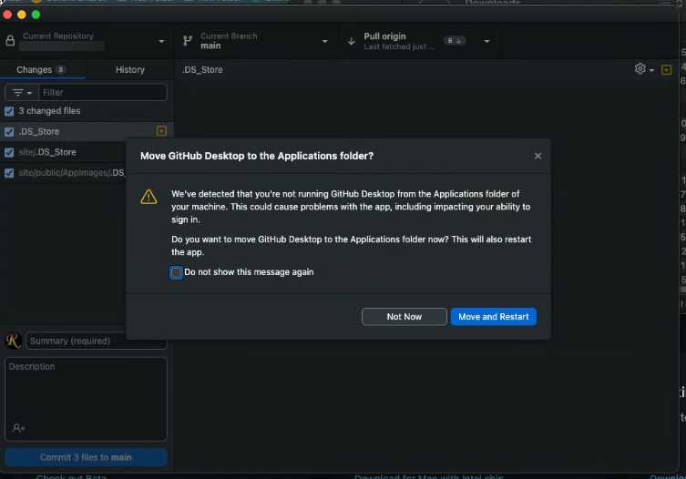
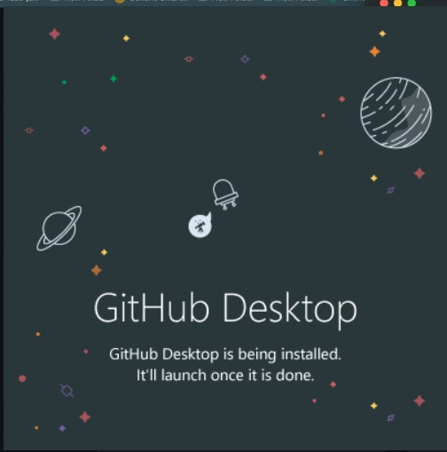
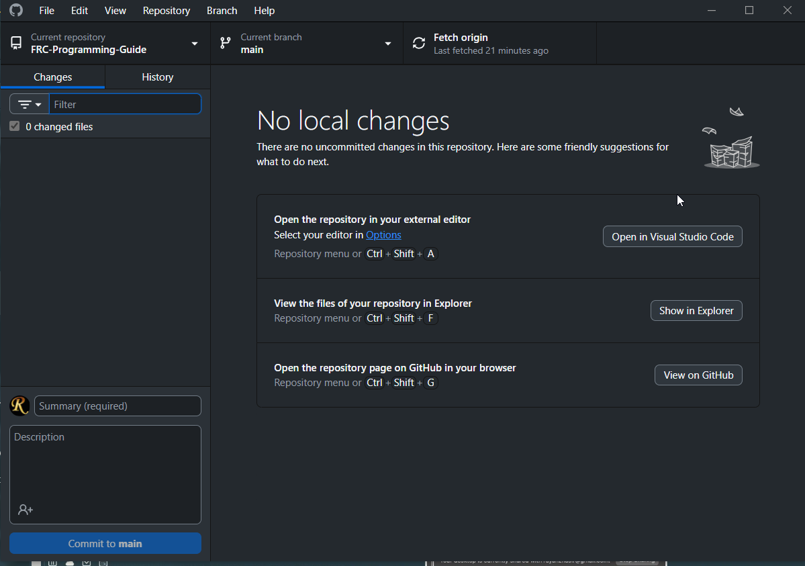

Installing GitHub Desktop
What is GitHub?
Git is the de facto code version control system. It tracks changes to code as we are editing, allowing us more complicated ways of saving and managing our code. GitHub is a website that provides a fancy GUI (graphical user interface) to access the tools of Git without needing CLI (command line interface), and also allows our code to be stored in the cloud, so that one member’s changes are visible to everyone. We can track everyone’s contributions from their device, see where mistakes or bugs may have occurred, and revert as necessary. read more on GIT and Github GitHub Desktop is an application used to interface between the two of them.
Standard Installation
GitHub does not support GitHub desktop for Linux, but there are alternatives or ported versions
Download
- Navigate to
https://github.com/apps/desktop

- Click “Download now”

- Click “Download for your device (Windows, Mac, etc.)”

- Proceed to the Installation process respective of your device.
Install
MacOS
- Unzip GitHub zip file

Accept any warnings.

- Run executable in downloads folder (and move to applications folder if necessary)

Voila! Installed.
On either device, log in to your GitHub account. Await further instruction to receive invitation to our organization. Then, add the repository to your device either through the GitHub Desktop app, or on the GitHub repository website.
Windows
- Run executable (and give administrative rights if necessary). This is mostly an automated process.

Voila! Installed.

On either device, log in to your GitHub account. Await further instruction to receive invitation to our organization. Then, add the repository to your device either through the GitHub Desktop app, or on the GitHub repository website.
Installing GitKraken (Alternative to GitHub Desktop)
Windows & Mac
The process is as self explanatory as installing GitHub GUI, just using a different installation URL.
Go to https://www.gitkraken.com/download and select for your operating system, and run the installation process following the directions on screen.
Linux
Depending on your distro, download the according file, whether that be a .rpm / .deb / .tar.gz (or use Snap Package Manager, depending on your support and prior installation of it). This process should be familiar to you if you are already familiar with Linux.
.deb File
Run (in the same directory as the downloaded file)
sudo dpkg -i gitkraken-amd64.deb sudo apt-get install -f # f is to fix dependencies if needed
.rpm File
Install with (in same directory)
sudo rpm -i gitkraken-amd64.rpm
.tar.gz File
If you’re here, you already know how to execute the steps necessary to properly use a
.tar.gzarchive; otherwise, it’s more hassle than it’s worth to get started as a beginner here.
Verify your gitkraken installation with
gitkraken --version (& verify your Git too, this will come with GitKraken) git --version
Installing Git CLI
Real alphas don’t need convenient things like applications. (Just kidding!) But seriously though, it is useful to know the commands and understand Git from the CLI perspective, but this setup could be a time waster long term, especially for a beginner. Any of the standard installation procedures will automatically install Git anyway.
Installing the GitHub GUI automatically installs Git, because Git is a dependency of GitHub. However, if you would like to install the CLI manually, below are the steps.
Windows:
Launch Powershell (using the start menu or
Win+R)
Run
winget install --id Git.Git -e --source winget
Breakdown of this Powershell line:
We are telling winget, the preinstalled package manager on windows, to search for Git from Microsoft official records and to then install it (and to also verify that it is indeed the only Git in the Microsoft record)
On either device, run
git --versionto verify successful installation of Git. To see the exact file location on Windows, typewhere git, and on Mac & Linux,which git
MacOS:
Install HomeBrew first. It is a package manager essential to using MacOS CLI Commands. (Its technically possible to install Git without HomeBrew, but there’s no reason to not have Brew installed anyway, its essential for every MacOS developer.)
Open Spotlight, and search for
Terminal.app
Type this in.
/bin/bash -c "$(curl -fsSL https://raw.githubusercontent.com/Homebrew/install/HEAD/install.sh)"
Explanation of command:
/bin/bash tells the pre-existing shell to run the following, which is to cURL, fetch from the web, the Homebrew installation script, install.sh, over ssl, which is secure way to fetch files. The file can be verified to be authentic or not by navigating to the URL in the script and ensuring it isn’t malicious.
Homebrew may prompt you along the installation. Follow and accept.
To confirm successful Brew installation, run
brew --version
Something should show on screen thats not an error. (homebrew will install to /opt/homebrew, but running which brew will show you specifically if the directory differs.)
Now, we can proceed to install Git. In the same terminal window, run
brew install git
This tells Brew (not bin\bash like earlier) to install Git from its records.
On either device, run
git --versionto verify successful installation of Git. To see the exact file location on Windows, typewhere git, and on Mac & Linux,which git
Linux:
This can really depend on your distribution. If you already have gotten Linux, you will know how to determine your distribution.
In your terminal, execute based on your distribution:
Ubuntu / Debian-based: (most common)
sudo apt update sudo apt install git
Fedora:
sudo dnf install git
Arch / Manjaro:
sudo pacman -S git
openSUSE:
sudo zypper install git
In each of these commands, all we are telling the computer to do is to act as the administrator with full rights, to reference the operating system’s package manager (like
wingetorbrew) to installGitfrom their records.
To check where Git is installed in Linux, run
which git
Verify installation (all devices):
git --version
You can learn about all the Git commands here